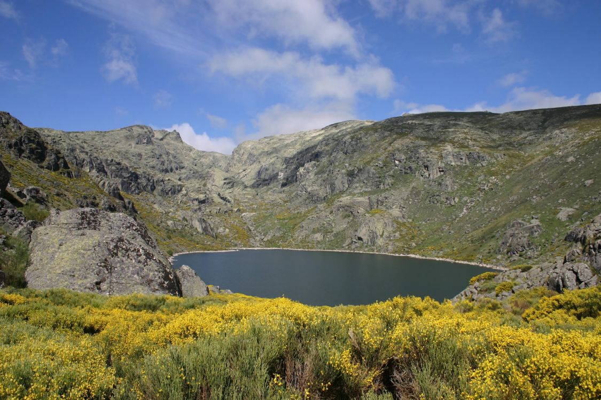

Informacion Principal
Contenido principal.Contenido principal. Contenido principal.Contenido principal.
Sierra de Gredos
La Sierra de Gredos es una sierra perteneciente al Sistema Central, en la península ibérica, situada entre las provincias españolas de Salamanca, Cáceres, Ávila, Madrid y Toledo. Su máxima altitud se da en la provincia de Ávila en el Pico Almanzor a 2592 msnm. Gredos es una de las sierras más extensas del sistema Central y en torno a sus grandes moles graníticas basculan cuatro comunidades autónomas: Castilla y León, Castilla-La Mancha, Comunidad de Madrid y Extremadura. Se extiende de este a oeste desde San Martín de Valdeiglesias a Hervás y de norte a sur del valle del Tormes a Rosarito. Parte de la sierra está declarada parque regional de la Sierra de Gredos.
Pirineos

Los Pirineos o el Pirineo es una cordillera montañosa situada al norte de la península ibérica, que hace de frontera natural entre España y Francia. Se extiende en dirección este-oeste a lo largo de 430 km, desde el cabo de Creus en el mar Mediterráneo hasta su unión con la cordillera Cantábrica, donde se ha establecido la falla de Pamplona como su límite convencional geológico, no existiendo interrupción geográfica entre ambas formaciones
Picos de Europa

Los Picos de Europa son un macizo montañoso localizado en el norte de España que pertenece a la parte central de la cordillera Cantábrica. Aunque no muy extenso, su cercanía al mar hace que sea pródigo en accidentes geográficos de gran interés.
Columna de la izquierda.Columna de la izquierda. Columna de la izquierda.Columna de la izquierda.
Mis buscadores
Otras Informaciones
Otras informaciones.Otras informaciones.Otras informaciones. Otras informaciones.Otras informaciones.Otras informaciones.